Coddington, Jonathan A., Kuntner, Matjaz, Opell, Brent D.
Abstract
Full text
Full text is available as a scanned copy of the original print version.
Get a printable copy (PDF file) of the
complete article, or click on a page image below to browse page by page.
Links are also available for
Selected References.
Images in this article
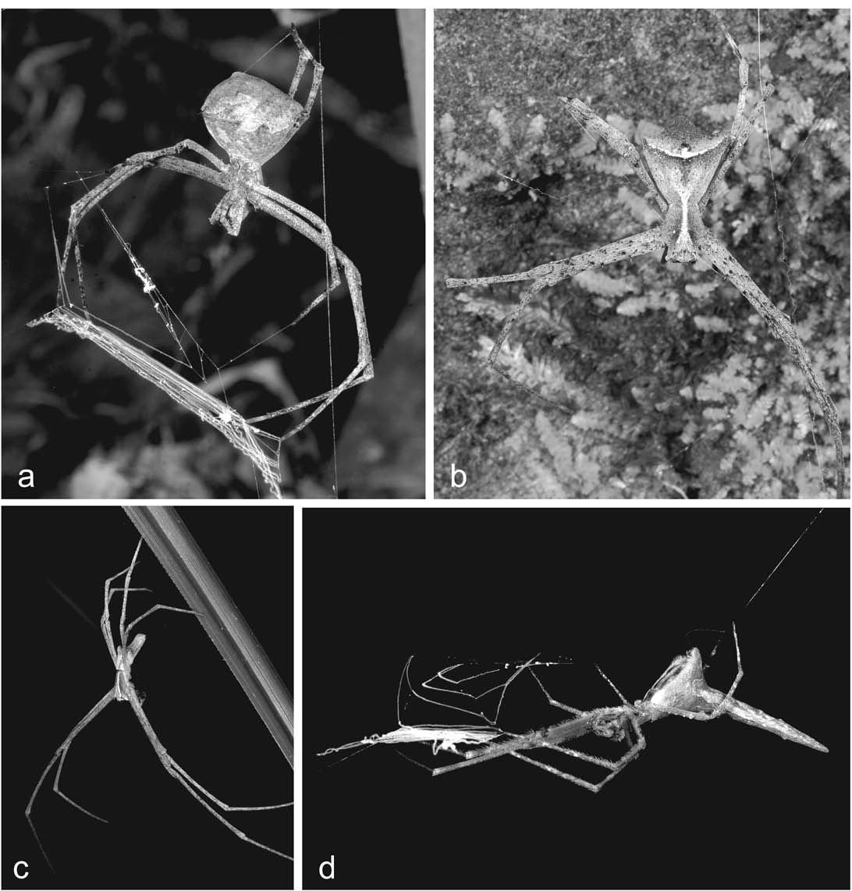
FIGURE 1 Menneus natural history: a–c are Menneus capensis, Cape Town; (a) female holding web; (b) subadult female dorsal; (c) male; (d) Menneus camelus, female from Sodwana Bay, KwaZulu-Natal, holding web (note unpaired abdominal tubercle).
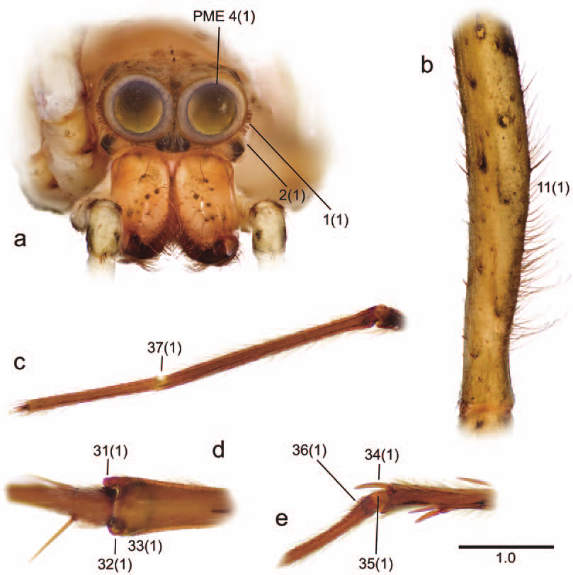
FIGURE 3 Deinopid somatic morphology: a, b are Deinopis spinosa, female from Florida, (a) frontal view of prosoma and (b) dorsal view of first left femur; c, e are Menneus aussie, male from Queensland: (c) first left tarsus, (d) distal second left tibia, and (e) second left metatarsus-tarsus joint. Numbers = characters (states); see text.
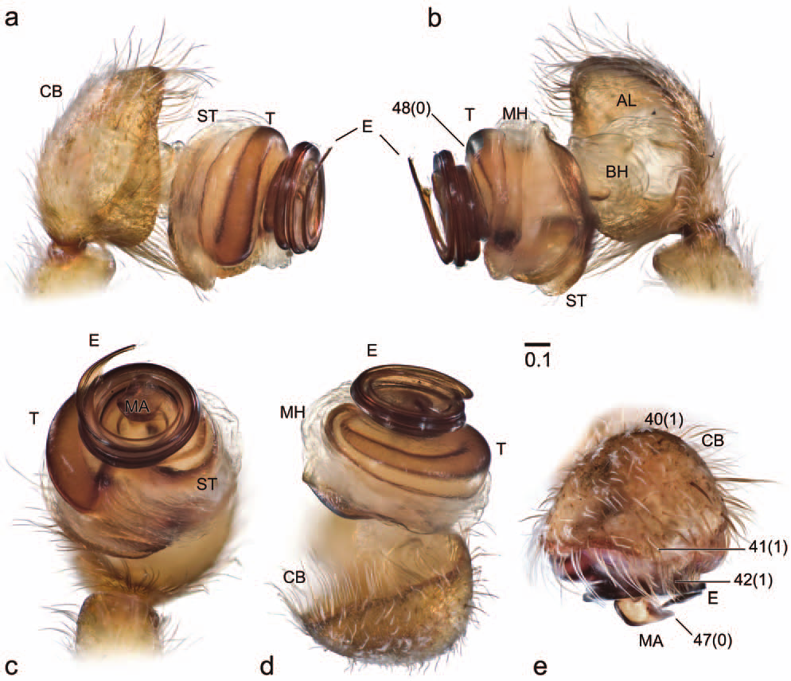
FIGURE 4 Deinopid male palpal morphology: a–d are Deinopis spinosa, expanded left palp in (a) prolateral, (b) retrolateral, (c) ventral, and (d) apical view; (e) Menneus camelus from South Africa, apical view.
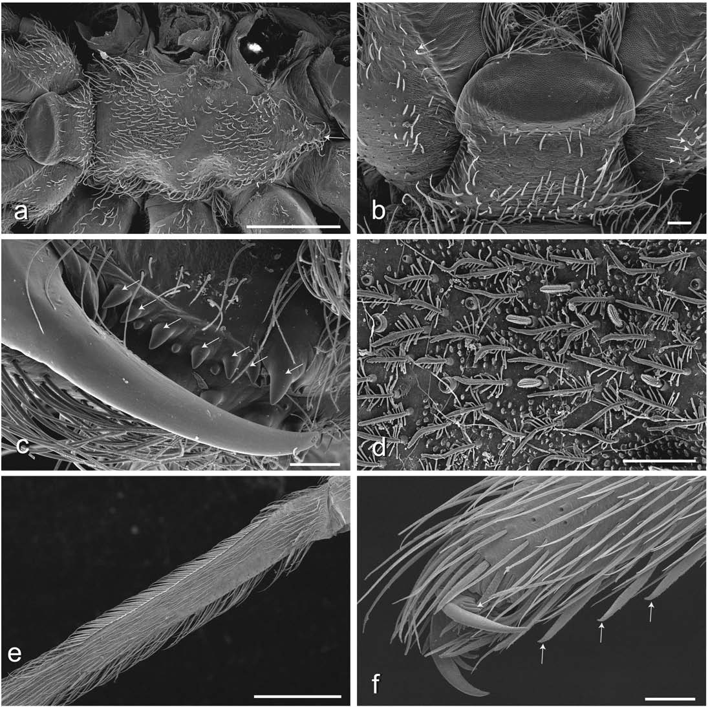
FIGURE 5 Deinopid female morphology (D. spinosa): (a) sternum, ventral view, showing setose knob (arrow); (b) labium, endites, trichobothria (arrows); (c) detail of chelicera, ventral view, showing teeth (arrows) and denticles; (d) detail of carapace showing feathery, blunt, and plumose setae; (e) metatarsus IV showing calamistrum; (f) tarsus IV claws showing reduced retrolateral teeth (arrow) and ventral tarsal deinopoid setal comb (arrows). All scales = 0.1 mm, except a = 1 mm.
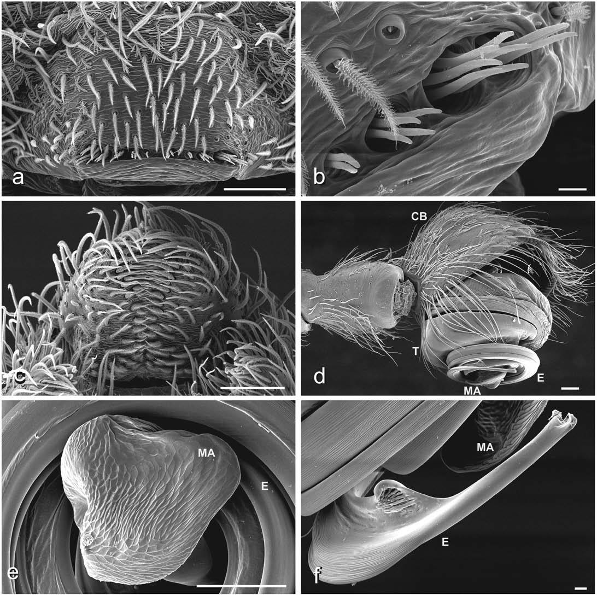
FIGURE 6 Deinopid male morphology (D. spinosa): (a) epiandrous spigots, ventral view; (b) detail of epiandrous spigots, ventral view; (c) anal tubercle, ventral view; (d) left palp, prolateral view; (e) median apophysis, ventral view; (f) detail of embolus tip. All scales = 0.1 mm, except b and f = 0.01 mm.
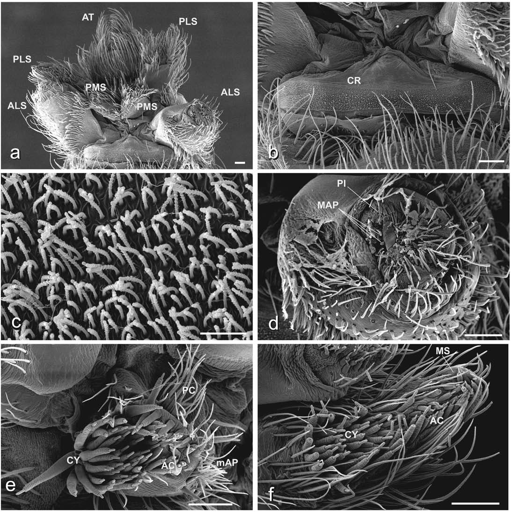
FIGURE 7 Deinopis spinosa female spinneret morphology, all ventral views: (a) spinneret overview; (b) cribellum; (c) cribellar spigot detail; (d) ALS with MAP and PI spigots; (e) PMS with mAP, AC, PC, and CY spigots; (f) PLS with CY, AC, and MS spigots. All scales = 0.l mm, except c = 0.01 mm.
FIGURE 9 Deinopis lamia, from Pico Turquino, Cuba: a–d are female; (a) habitus, dorsal; (b) epigynum, ventral; (c) epigy- num, caudal; (d) epigynum, dorsal; e–g are male; (e) habitus, dorsal; (f) left palpal bulb, ventral; (g) embolus tip.
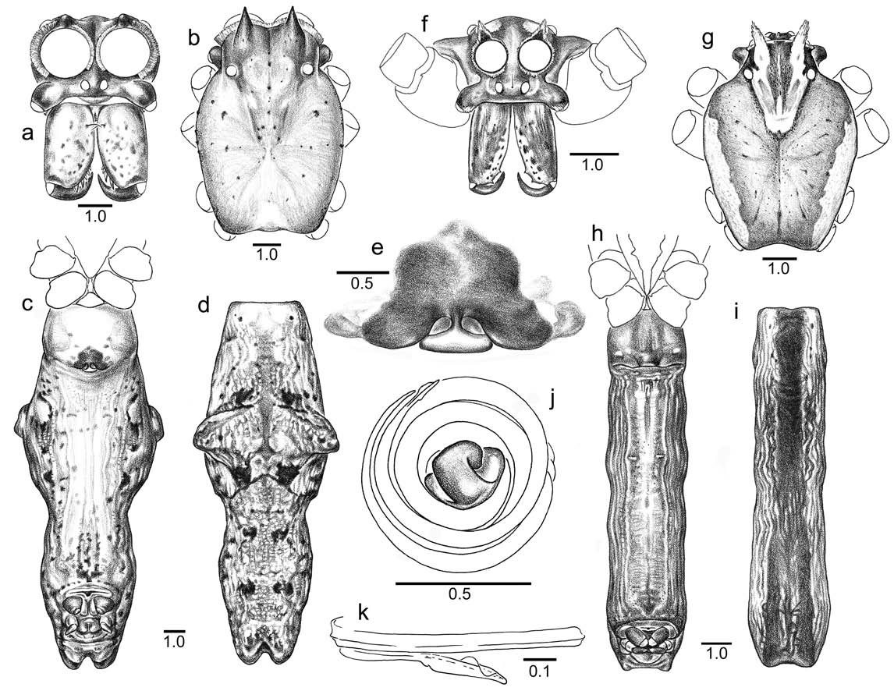
FIGURE 10 Deinopis cylindrica: a–e are female from Lake Sibayi, KwaZulu-Natal; (a) prosoma, frontal; (b) prosoma, dorsal; (c) abdomen, ventral; (d) abdomen, dorsal; (e) epigynum, ventral; f–j are male from Empangeni, KwaZulu-Natal; (f) prosoma, frontal; (g) prosoma, dorsal; (h) abdomen, ventral; (i) abdomen, dorsal; (j) left palpal bulb, ventral; (k) embolus tip.
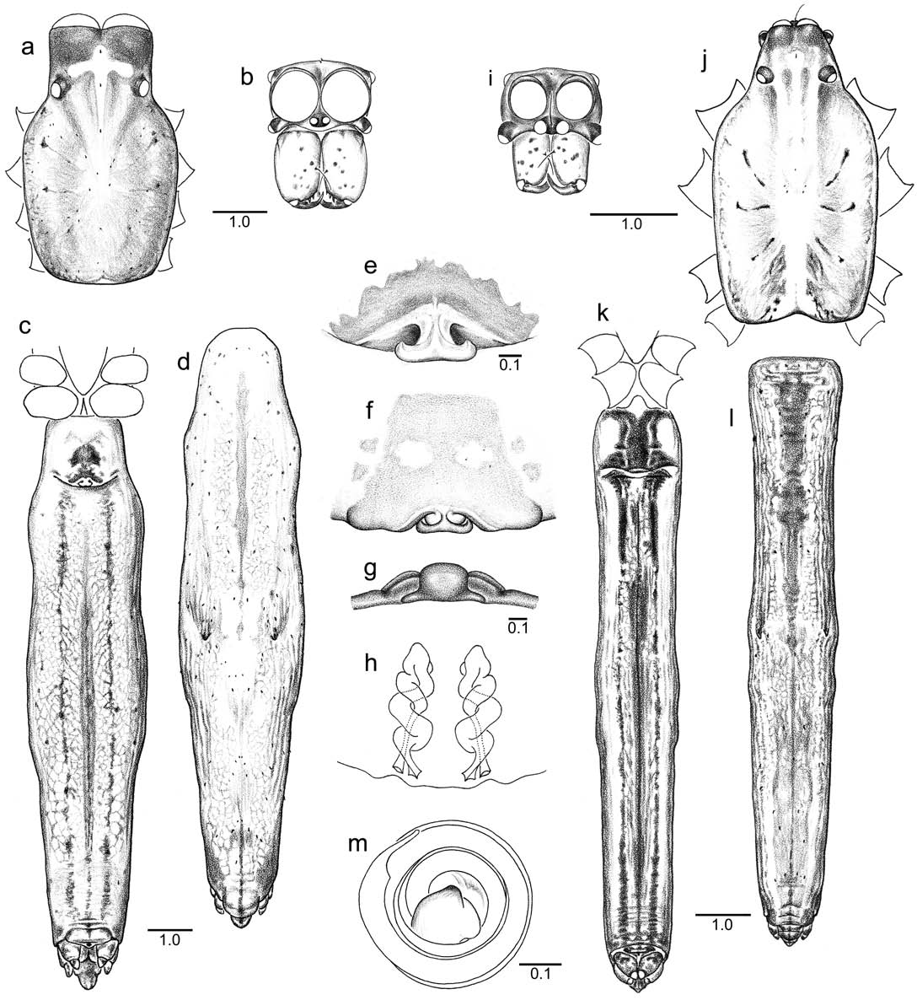
FIGURE 11 Deinopis spinosa: a–e are female from Florida; (a) prosoma, dorsal; (b) prosoma, frontal; (c) abdomen, ventral; (d) abdomen, dor- sal; (e) epigynum, ventral; f–h are epigynum of female from Jamaica; (f) ventral; (g) caudal; (h) dorsal; i–m are male from Florida; (i) prosoma, frontal; (j) prosoma, dorsal; (k) abdomen, ventral; (l) abdomen, dorsal; (m) left palpal bulb, ventral.
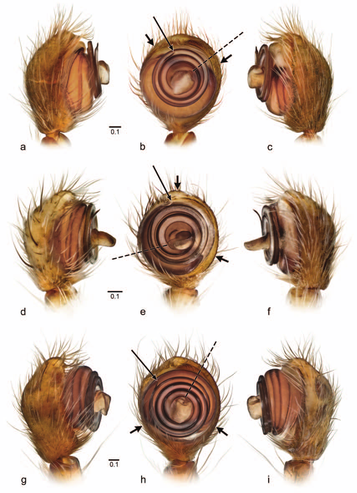
FIGURE 14 Menneus male left palps in (left) prolateral, (middle) ventral, and (right) retrolateral view: (a–c) M. camelus, (d–f) M. capensis, and (g–i) M. darwini. Diagnostic features of species in b, e, h: short bold arrows indicate extent of median hematodocha; long slender arrow indicates embolus tip; dashed line indicates the axis of the median apophysis and basal lobe.
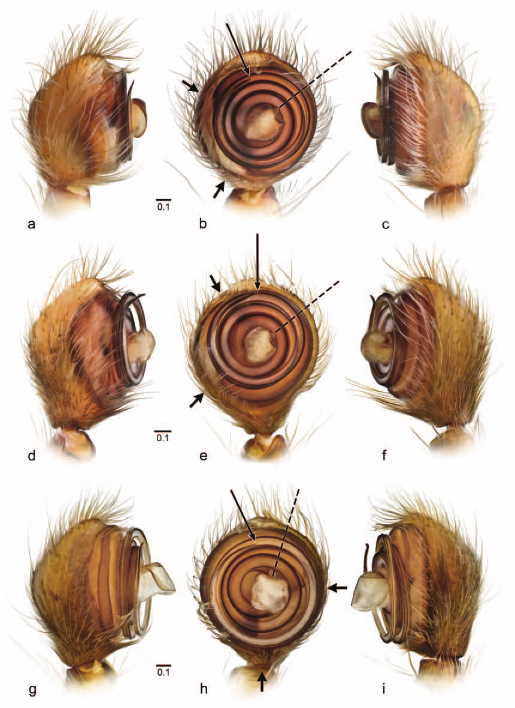
FIGURE 15 Menneus male left palps in (left) prolateral, (middle) ventral, and (right) retrolateral view: (a–c) M. dromedarius, (d–f) M. samperi, and (g–i) M. tetragnathoides. Diagnostic features of species in b, e, h: short bold arrows indicate extent of median hematodocha; long slender arrow indicates embolus tip; dashed line indi- cates the axis of the median apophysis and basal lobe.
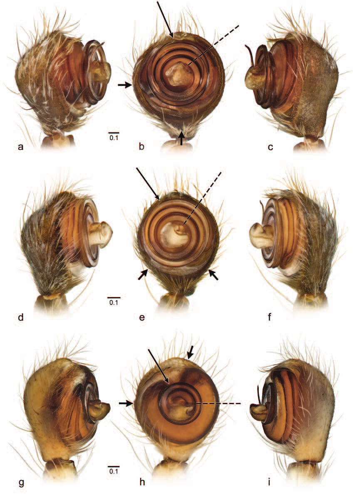
FIGURE 16 Menneus male left palps in (left) prolateral, (middle) ventral, and (right) retrolateral view: (a–c) M. aussie, (d–f) M. nemesio, and (g–i) M. neocaledonicus. Diagnostic features of species in b, e, h: short bold ar- rows indicate extent of median hematodocha; long slender arrow indicates embolus tip; dashed line indicates the axis of the median apophysis and basal lobe.
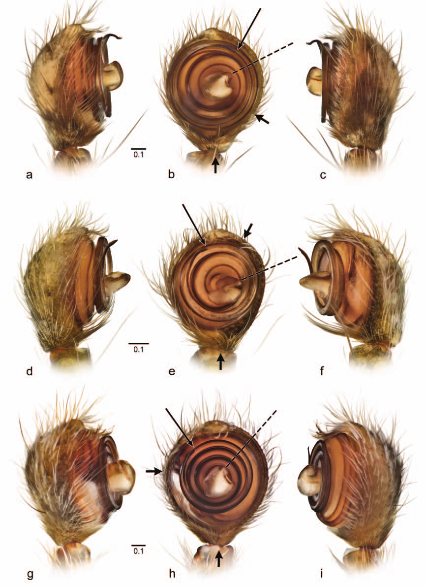
FIGURE 17 Menneus male left palps in (left) prolateral, (middle) ventral, and (right) retrolateral view: (a–c) M. superciliosus, (d–f) M. trinodosus, and (g–i) M. wa. Diagnostic features of species in b, e, h: short bold arrows indicate extent of median hematodocha; long slender arrow indicates embolus tip; dashed line indicates the axis of the median apophysis and basal lobe.